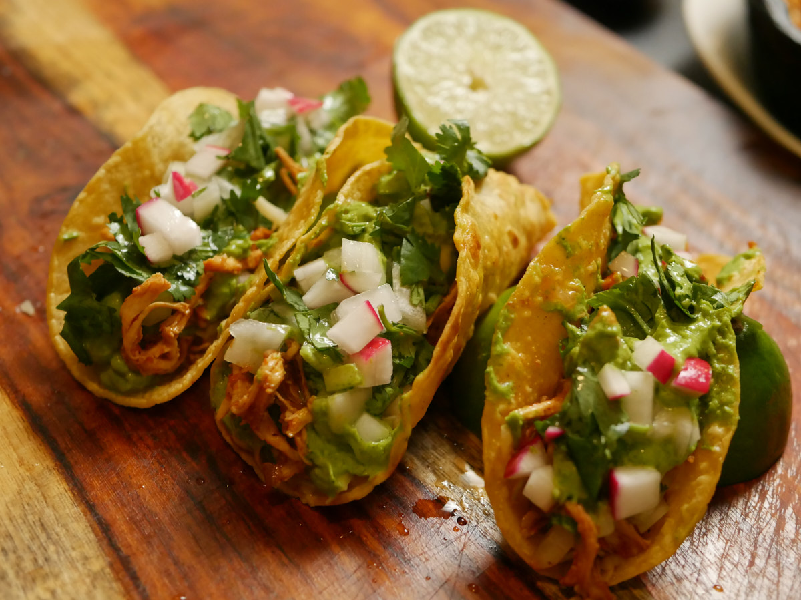

These are one of my favorite types of tacos to make because they have so much flavor! A taco just with onion, cilantro and lime already tastes amazing. Now add some avocado crema (sour cream) and things get crazy good.
Equipment
- Pan
- Blender
Ingredients
- 2 Tomatos Large
- 6 Radish
- 2 Onions
- 1 Cilantro Bunch
- 1 Pepper Jack Cheese
- 1 Sour Cream
- 2 Chicken Breasts (Thighs work also but are tedious to shred)
- 4 Avocados
- 3 Limes
- 1 Pack Corn Tortillas
- 1 Black Pepper to taste
- 1 tsp Garlic Powder
- 1.2 tsp Chipotle Powder
- 1 Salt to taste
Instructions
Chicken Breast
- In a container place chicken breast, add salt and one lime for a quick marinade (5min while you take out the rest of the ingredients).
- Heat cast iron pan and add 1 tbsp of oil. Adjust flame to medium.
- Pat chicken dry with a paper towel and add to hot pan. Flip once browned and cook through. Then remove it from the pan.
Base Sauce for Chicken
- Dice 2-3 tomatoes depending on size.
- Dice 1/3 of a large onion.
- Heat another pan with 1 tbsp of oil and add the diced tomatoes and onions. Salt to taste and grind a bit of pepper.
- Mix and cover for 5min. Set the flame to low.
- Uncover and mix. Once the tomatoes have been reduced to the peel then it's done.
Side Ingredients
- Remove the ends of the radishes (after washing them thoroughly) and dice into small cubes. Place in a container.
- Dice 1/3 of an onion and set aside. Roughly chop a cilantro and combine with diced onion.
- Optional: Add 1 lime to the onion and cilantro mix.
- Shred Jack Pepper Cheese – set aside.
Avocado Crema
- To a blender add:
- A large bunch of cilantro, 1 1/2 of avocado, 1 tsp of salt, 1 1/2 lime juice and 3 Tbsp of sour cream. Blend until nice and smooth. Taste for desired acidity and salt.
- Empty out into a container
Pulled Chicken
- With the chicken having cooled down you can begin to shred it. Just pull the meat into long strands. The thinner they are the easier it will be to consume them. I like them thin.
- Heat the same pan where you made the chicken. Add 1 Tbsp of oil.
- Add the shredded chicken once the pan is hot.
- Add pepper to taste, 1 tsp of garlic powder, 1.2 tsp of chipotle powder, salt to taste.
- Add the base sauce we made earlier
- Mix well for about 3min or so and taste. Adjust seasoning if needed and remove from the heat.
Assembling the Pulled Chicken Tacos!
- Heat the corn tortillas on a pan with medium heat. First add a drop or two of oil to the pan and use the tortilla to spread it out. Just warm them making sure not to over do it otherwise they get toasted and turn hard. Wrap them in a paper towel and place them inside a sealed container.
- Grab a warm tortilla and add shredded cheese.
- Add the hot shredded chicken on top of the cheese. This will help melt it.
- Add your Avocado Crema on to the chicken.
- Add your onion and cilantro mix.
- Finally top it off with the diced radish for some texture and color.
- Fold and and enjoy!